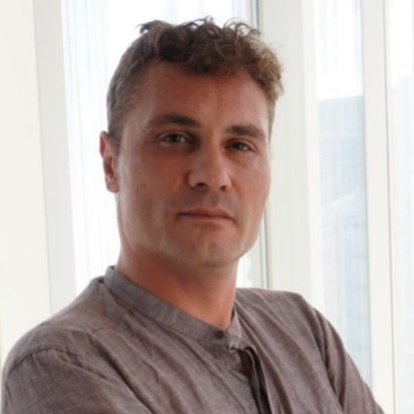

Welcome to SPEAKABLE 2026!
A full-day workshop on Speech Language Models in Low-Resource Settings, focusing on Performance, Evaluation, and Bias Analysis.
Quick Overview
SPEAKABLE 2026 brings together researchers and practitioners working on speech-native language models, with a special focus on low-resource settings. The workshop addresses the persistent constraints on data availability, annotation quality, and computational budget that affect underrepresented languages and speaker communities.
Workshop Countdown
Check the Important Dates page for submission deadlines and workshop schedule.
Keynote speaker
Jordi Luque, PhD
Lead Research Scientist | Scientific Research
Future Exploration and Innovation | CDO
Title
Toward Trustworthy SpeechLLMs for Low-Resource Multilingual ASR: Evidence from ELOQUENCE on Adaptation, Bias, and Federated Learning
Abstract
While Speech Large Language Models (SpeechLLMs) are rapidly advancing multilingual speech recognition, their benefits remain disproportionately concentrated in high-resource languages. Drawing on findings from the EU-funded ELOQUENCE project, this talk provides an evidence-based analysis of strategies to bridge this linguistic gap. We examine the critical roles of multilingual connectors, low-resource adaptation, context-aware modeling, federated training, and robust evaluation. Our results suggest that successful transfer in low-resource settings requires more than scaling: it depends on appropriate data granularity (language vs. language-family), sophisticated rehearsal strategies to prevent catastrophic forgetting, and seamless context integration. Furthermore, we show that federated training can preserve privacy while approaching centralized multilingual performance, provided client language composition is properly handled. We further show that trustworthy deployment requires explicit attention to robustness under perturbations and to bias and fairness across demographic and linguistic groups. Ultimately, we argue that advancing multilingual SpeechLLMs requires a multidimensional approach that co-optimizes performance with reliability, equity, and efficiency, moving beyond average error rates to prioritize linguistic diversity, bias mitigation, and privacy.

Bio
JORDI LUQUE received his M.S. in Telecommunications Engineering and his Ph.D. in 2012 from the Technical University of Catalonia (UPC), Barcelona, Spain. He is currently a Lead Research Scientist within the AI for Speech and Language Group at Telefónica Innovación Digital (formerly Telefónica I+D), where his research focuses on signal modeling and speech and language processing for social good. He also serves as the Principal Consortium Coordinator for the EU-funded ELOQUENCE project, an ambitious initiative dedicated to pioneering innovative solutions for high-stakes large language model applications. Additionally, Jordi is an Assistant Professor at UPC, teaching Machine Learning, Dialogue Processing and Interactive Systems within the Artificial Intelligence and Informatics degree programs. His research interests encompass signal processing, statistical learning, and the physics of complex networks.
Three Core Strands
1. Efficient Adaptation
Parameter-efficient methods, multilingual transfer, knowledge distillation, and edge-constrained inference for low-resource speech tasks.
2. Meaningful Evaluation
Moving beyond WER to task-appropriate metrics, calibration analysis, and slice-aware reporting by accent, dialect, and channel.
3. Responsible Practice
Treating bias analysis as routine scientific reporting, with transparent data documentation and privacy guardrails.
Contact
For questions or more information about the workshop, please contact the organizing committee:
Email:
speakable2026@gmail.com
For more information about the organizing team, visit the Organizers & Committee page.